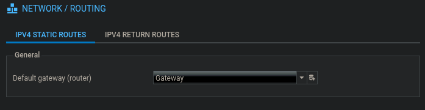
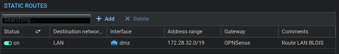
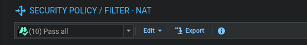
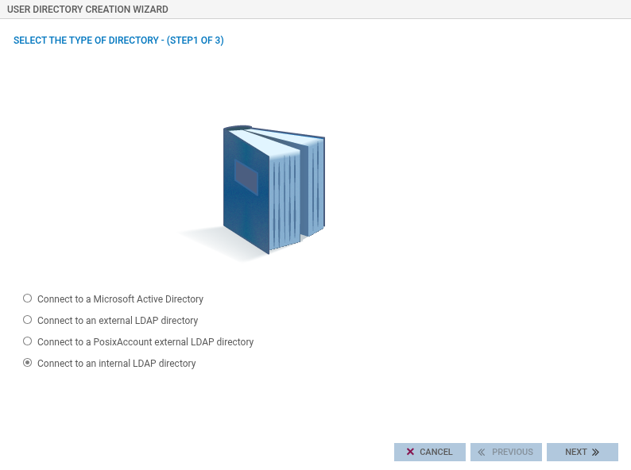
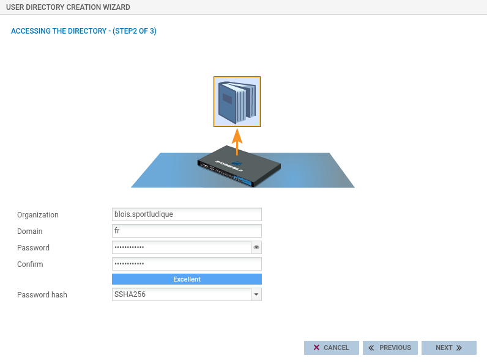
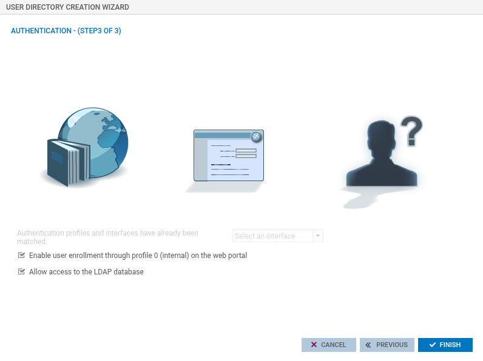
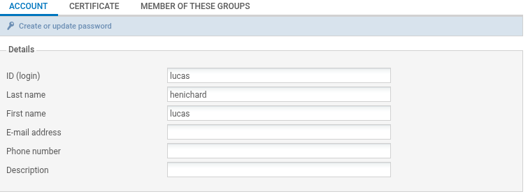
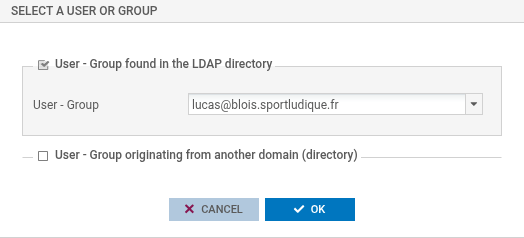

StormShield
Routage
Objets nécessaires
Configuration > Objects
Networks
Réseau MANA et LAN
Add > Network > les ip des réseaux
Hosts
Gateway out (vers internet) et gateway in (vers la LAN)
Add > Host > les ip des hosts
Routes
Il faut définir les routes vers internet (default) et vers la LAN
Route par défaut
Dans Configuration > Routing

Route vers la LAN

Filtrage
Configuration > Security Policy > Filter - NAT
Pass All
Pour les tests, on désactive le filtrage, on mets le Pass All:

Création d'utilisateurs
On peut créer des users attitrés, ils n'auront par contre pas autant de permissions que admin
Création d'un répertoire LDAP
Dans Configuration > USERS > Directories configuration:



Création de l'utilisateur
Dans CONFIGURATION > USERS > Users and Groups:
Cliquer sur Add user

Ajouter les perms admins
Dans CONFIGURATIONS > SYSTEM > Administrators:
Add an administrator with all privileges
